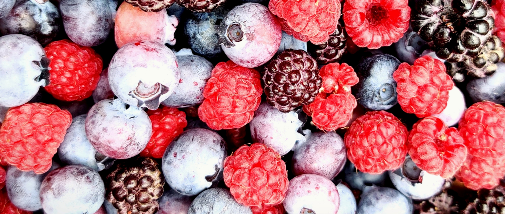

¿Qué es Turlich?
En 2019 surgió la idea de este proyecto, se trata de la invencion de Jugos naturales de frutos rojos. Si bien es cierto que para esa epoca habían mmuchos comerciantes con ese producto lo quisimos hacer de forma diferente, a un modico precio pero sin bajar la estupenda calidad de nuestros jugos.
¿Por qué Turlich Salio de la idea de que hacemos -si está dentro de nuestro alcance- lo que sea para que el cliente esté contento, es como decirle siempre al cliente "Por supuesto" que es la palabra traducida del aleman al español.